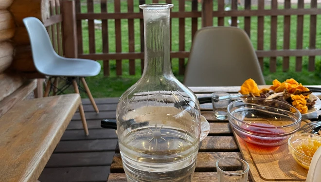
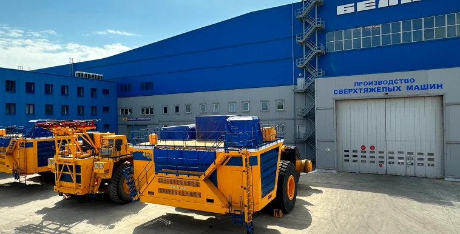

На первый взгляд даже само название Белоруссии говорит о том, что она очень похожа на Россию.
Нас действительно многое связывает. Кстати, в соседней стране предпочитают, чтобы страну называли Беларусь, спокойно и настойчиво (что можно считать отличительной чертой народного характера). Вас будут поправлять и просить использовать в написании или названии Беларусь или же совсем официально — Республика Беларусь.
Если говорить про этот этап взаимоотношений наших стран, то он начался с распада Советского Союза в декабре 1991 года. Тогда все республики бывшей общей Родины выбрали собственный путь развития и Беларусь не стала исключением. Впервые за 200 лет республика и населяющие её люди стали отдельным государством.
Впрочем, так было не всегда. Чтобы понять, что у Беларуси свой особый шарм и особенная судьба, достаточно быстро пробежаться по историческим векам.
Так, например, на территории Беларуси в Средние века было распространено то, чего не было на Руси. Например, многие города имели Магдебургское право — то есть автономию и самоуправление внутри государства. Такой автономии городов в России не было никогда. А, например, такой курортный озёрный городок, как Брацлав, и вовсе на своём гербе имеет масонский знак всевидящего ока. И в нынешних условиях смотрится уже в Республике Беларусь крайне экстравагантно.
Всё дело в том, что за долгие века земли Беларуси часто переходили из рук в руки.
Так, в XIV веке многие территории принадлежали Литве. Но не нынешней Литве, а скорее Великому княжеству Литовскому, которое многие историки долго называли Западной Русью в противовес Восточной Руси, находившейся под властью Орды. Затем белорусские территории стали частью Речи Посполитой. И до сих пор территорию страны украшают многочисленные костёлы (католические храмы). А часть населения исповедует католичество.
После разделов Польши в конце XVIII века между Россией, Пруссией и Австро-Венгрией в состав Российской империи впервые вошли обширные белорусские территории. Во времена Российской империи территории называли Белоруссией. Как и Белорусская Советская Социалистическая Республика, когда появилась в 1920 году и вошла в состав СССР. А Западная Белоруссия стала частью Белорусской ССР лишь в 1939 году, после того как Красная армия захватила часть территорий Восточной Польши. В общем, даже этот краткий экскурс даёт понять, что в спокойной и вроде соседней Беларуси намешано очень много культур, традиций и истории.
Наш путь
Наш путь в Беларусь из России оказался самым простым среди всех стран.
В республику можно приехать на машине за девять часов. Или прилететь на самолёте. Полтора часа — и вот ты уже в аэропорту Минска: прохождение границы скорее формальность.
Ведь юридически Россия и Беларусь образовывают Союзное государство, путь которого в политическом мире тоже был довольно долог и тернист.
Прежде всего, что поражает каждого, кто приезжает в Беларусь, — это вежливость местных жителей. Люди говорят неспешно и размеренно. Ритм жизни даже столичного Минска по сравнению с московской спешкой как будто проигрывается на скорости 0,5.
А если отъехать от Минска в небольшие городки, в тот же упомянутый уже в рассказе Брацлав, то там и вовсе время практически останавливается. Жители особо не спешат. Машины едут степенно.
И в целом атмосфера, если можно так сказать, действует умиротворяюще.
Ты как будто попадаешь в санаторий, где от тебя требуют расслабиться и не мчать впереди телеги. Второе, что сильно бросается в глаза как в деревне, где эти самые телеги встречаются повсеместно, так и в современных городах, — это чистота и ухоженность. Для россиянина всё это выглядит практически стерильно: улицы выметены, стены покрашены, дороги практически везде в хорошем состоянии.
Особенно удивляют лужайки — везде трава подстрижена по одному уровню. И ладно бы если только в городах. Но нет. Аккуратные газоны встретят вас в деревнях. Аккуратные газоны удивляют даже на трассе (растительность вдоль дорог): там, где расстояние между населёнными пунктами десятки километров, всё аккуратно, словно под линейку, подстрижено.
Этот доскональный аккуратизм вызывает чувство некоей неловкости. Кажется, что в реальной жизни так не бывает. Словно под покровом ночи на улицы выходят тысячи человек и, пока никто не видит, ровняют эту траву. На этот вопрос белорусы отвечают, что дело просто в их природной хозяйственности. Каждый житель старается не мусорить или прибирать за собой на своей территории.

Туризм в Беларуси
Туристические поездки из России в Беларусь сегодня набирают популярность. И в соседней стране действительно есть что посмотреть и попробовать. Издалека может казаться, что даже Минск — это сплошь советская застройка с широкими проспектами и многоэтажками. Но это не так: в столице Беларуси есть и красивый исторический квартал, и множество интересных маленьких скверов и уютных кафе.
Запад страны представляет собой как будто отдельную территорию с ощутимым влиянием Западной Европы. Уже упомянутые многочисленные костёлы, узкие европейские улицы — особый шарм и очарование. Кроме того, на территории Беларуси есть и крайне важные для совместной истории памятники. Например, Брестская крепость до сих пор поражает гостей масштабными монументами и героическим размахом совокупно с легендарной историей её обороны в начале Великой Отечественной войны.
Беларусь — родина ярких художников. Лев Бакст, Иван Хруцкий, Хаим Сутин или широко известный Марк Шагал были родом из Беларуси, в их родных городах есть прекрасные музеи в честь них. Из Витебска, например, и лауреат Нобелевский премии Жорес Алфёров... да и много кто ещё.
Кухня в Беларуси — тут, конечно, не удержаться от стереотипов — опирается на твёрдые клубни картофеля. Драники — основа национальной кулинарии. От простых жареных картофельных оладий до панских драников с грибами и свиными шкварками. Есть колдуны — когда драником оборачивают мясную котлету. Есть бабка — это когда колдун сминают и мясо с картошкой перемешивают. Есть драники с рыбой и капустой, с творогом и соленьями — в общем, картофельный край и отчасти картофельный рай для любителей вкусной жареной и весьма калорийной пищи.

Кроме того, ещё очень много других блюд — от вареников до кровяных колбас. Чтобы не превращать этот текст в кулинарный блог, можно сказать так: поезжайте и попробуйте сами. Из напитков белорусы предпочитают самогон, настойки и наливки, которые вам предложат просто великое множество на любой вкус, кошелёк и качество. Есть, конечно, и безалкогольные квасы, морсы, узвары и прочие фруктово-зерновые радости. Пиво, кстати, тоже весьма приличное.
Россия
и Беларусь
в экономике
Россия и Беларусь образовывают Союзное государство, которое стремится развивать науку и экономику двух стран совместно. 8 декабря 1999 года был подписан Договор о создании Союзного государства между Российской Федерацией и Республикой Беларусь.
Сегодня Россия является основным торговым партнёром Республики Беларусь, её доля в товарообороте Республики Беларусь составила 59,5 процента. По итогам 2022 года внешнеторговый оборот между странами превысил 45 млрд долларов США и увеличился на 14,3 процента по отношению к уровню 2021 года.
Многие виды экспортной продукции, производимые в Беларуси, предназначены прежде всего для российского рынка. В Россию направлялось до 90% белорусского экспорта молочной продукции, около 65–75% — машин и оборудования, 60–70% — транспортных средств и сельскохозяйственной техники.
До сих пор белорусские и качественные продукты — это синоним. И практически все сыры, молочные продукты, в том числе мороженое или колбасы, особо рачительные россияне стараются брать именно белорусского производства.
В 90-е годы, когда в России активно делили собственность, покупали и банкротили предприятия, Беларусь старалась сохранить советское промышленное наследие и продолжала выпускать товары на высоком уровне с надлежащим контролем качества.
Основой для устойчивого развития торгово-экономических связей двух стран является расширение взаимодействия Республики Беларусь с регионами Российской Федерации. Межрегиональное сотрудничество наряду с решением вопросов социально-культурного развития позволяет наращивать объёмы взаимных поставок товаров, расширять товаропроводящие сети, укреплять производственную кооперацию, создавать сборочные производства и новые рабочие места.

Совместный транспорт
Между Республикой Беларусь и 73 регионами Российской Федерации подписано 81 соглашение о торгово - экономическом, научно-техническом и культурном сотрудничестве. Сейчас, когда международное сотрудничество сильно усложнилось, именно Беларусь помогает России, в том числе и с производством.Так, например, в Нижегородской области существует проект по совместному производству трамваев. По сути, это аналог машинной сборки: на территории Нижегородской области образован цех для сборки трамваев.
В каждом трамвае 385 жгутов, то есть несколько километров проводов. В цеху собирают и сваривают присланный из соседней республики вагон. По плану один вагон будет выпускаться три дня. При этом стоимость одного вагона выходит дешевле, чем даже российских аналогов на рынке: 57 миллионов рублей стоит один вагон.
Власти Нижегородской области планируют заменить совместными трамваями весь устаревший городской парк. Не так уж и удивительно, ведь предыдущие модели трамваев на рельсах ещё с 80-х годов прошлого века и явно устали.
Даже название для трамвая придумали совместное и отчасти героическое — МИНиН.
Даже название для трамвая придумали совместное и отчасти героическое — МИНиН.
На первый взгляд — как фамилия героя народного ополчения в период Смуты 1612 года купца Кузьмы Минина, который был родом из Нижнего Новгорода. Но если раскрыть аббревиатуру, то получается "Минск и Нижний Новгород" — современный совместный проект двух городов.
Совместная
промышленность
Одним из символов Беларуси также является БелАЗ. Люди, даже далёкие от темы промышленности, прекрасно представляют себе эти огромные машины, самая большая из которых весит свыше 400 тонн и размером с пятиэтажный дом. Эти гиганты выпускают в небольшом городе Жодино с 1948 года. И по сей день они являются основной базой для карьеров, где добывают уголь, по всей России.
Так, например, в Кемерове карьерные самосвалы БелАЗа являются основной рабочей лошадкой (точнее сказать, лошадиной) для вывоза грунта. На Кедровском разрезе водитель Виталий Орлов работает на самосвалах свыше 40 лет. И говорит, что такие надёжные машины никогда не подводят.

В 80-е годы прошлого века он начал работать на 27-тонной машине, сегодня — он за рулём уже 220-тонной махины. И каждый день вывозит в кузове тонны вскрыши (верхний слой породы, которая лежит на пути к углю).
На заводе БелАЗ говорят, что сейчас их предприятие встаёт на рельсы импортозамещения.
В феврале 2023 г. Минск и Москва подписали Соглашение о единой промышленной политике. Белорусские компании (БелАЗ, АМКОДОР и МТЗ) всё больше представлены на российском рынке. А более половины комплектующих для БелАЗа приобретается у российских производителей.
Трансмашхолдинг тестирует моторы для карьерных самосвалов грузоподъёмностью до 220 тонн. Планируется, что в 2023 г. в Беларусь поставят 20 двигателей. Силовые установки для грузовиков БелАЗ поставляет и Демиховский машиностроительный завод: в 2023–2024 гг. закупят 350 шт.
Таких производств, как БелАЗ, в Беларуси десятки, и каждый год представители предприятий совершают множество поездок по регионам России или принимают гостей из соседней страны, чтобы согласовать дальнейшую общую работу.
Кроме того, в Беларуси уже сейчас открыто свыше ста инженерных классов "Роббо" — компании, созданной в России и поставившей своей целью обучение школьников из городков и посёлков высоким технологиям. Ребята учатся создавать и программировать роботов — разрабатывать из модулей перспективные проекты, писать программы, чтобы в будущем стать частью новой инженерной элиты страны.
Совместная история
Важная часть дружбы России и Беларуси — совместная история. И, в частности, память о Великой Отечественной войне. Казалось бы, прошло почти 80 лет, но и сегодня в лесах Беларуси остаются её следы. По некоторым данным, в результате войны погиб каждый третий житель Беларуси. И на территории республики шли тяжелейшие кровопролитные бои буквально за каждый километр территории на протяжении 1941–1945 годов.
Поисковые отряды из России и Беларуси сегодня работают в Витебской области, где в 1943–1944 годах была мощнейшая немецкая линия обороны на берегах Днепра. Поисковики отрядов "Истринский рубеж" и "Пламя" выезжают на вахты, где на протяжении нескольких недель ищут павших советских солдат.
И находят и солдат, и снаряды, и патроны: всё это скрыто в лесах и полях. И порой стоит копнуть, чтобы наткнуться на стихийное братское захоронение, не отмеченное
ни на одной карте.
Под жарким июньским солнцем поисковики достают из-под земли скелеты сразу нескольких солдат, лежащих на минном поле. Здесь ещё остались немецкие подпрыгивающие мины, многие из которых взведены и до сих пор опасны.
Специалисты на месте проводят обследование и выясняют, что погибшим в общей яме вряд ли было больше 20 лет. Это становится ясно после изучения костей. Очень часто не получается верно идентифицировать погибших — не у всех советских воинов были именные жетоны. А те личные книжки, которые были, делались из бумаги и чаще всего истлевают.
Поэтому останки погибших выкапывают и везут в специальные медицинские лаборатории на опознание. По предположениям поисковиков, таких павших воинов в белорусских лесах сотни, а вероятнее всего — тысячи. Сегодня на поисковую деятельность выделяются средства и оказывается помощь как из бюджета России, так и из бюджета Беларуси. Но работы предстоит на долгие годы.

Совместная мода
Одно из направлений Беларуси, на которое уже сейчас обращают внимание предприниматели, — это производство тканей и пошив модной одежды. Так, в городе Орше есть крупнейший в Европе текстильный комбинат. Он производит 8% всех льняных тканей в мире. За всё время существования предприятие выпустило 3 миллиарда погонных метров ткани: этого количества хватило бы, чтобы обернуть Землю по экватору восемь раз.
Раньше в Советском Союзе существовало несколько подобных гигантских комбинатов в разных республиках,
в том числе и в России. Но девяностые годы пережить смог только белорусский комбинат. 80% его продукции идёт на экспорт. И зачастую те модные коллекции изо льна, которые демонстрируют на подиумах Милана, отшиты как раз из ткани, произведённой в Орше.
Сегодня всё чаще российские потребители обращают внимание на экологичную и модную льняную ткань. Заместитель генерального директора комбината Сергей Сидин считает, что разворот к белорусской продукции пойдёт лишь на пользу обеим странам и давно пора использовать те ресурсы, которыми обладают Россия и Беларусь, на полную мощность. Правда, для этого и трудиться придётся на полную мощность. Уже сейчас в модных магазинах можно встретить продукцию льняного комбината, но дальше — больше, уверены бизнесмены.
Россия
и Беларусь
меняют мир
17 июня завершился Петербургский международный экономический форум. Главной темой стало "Суверенное развитие — основа справедливого мира. Объединение усилий во имя будущих поколений". На площадке ПМЭФ состоялась сессия высокого уровня "Союзное государство: стратегия взаимодействия России и Беларуси".
Были подведены промежуточные итоги реализации 28 союзных программ, которые определяли сближение государственного управления и регулирования во всех ключевых сферах России и Беларуси с 2021 г. Из них выполнено уже 80%.
3 октября 2022 года был подписан договор "Об общих принципах налогообложения по косвенным налогам". Предусмотрено создание совместного консультативного органа — Комитета Союзного государства по налоговым вопросам. В сентябре 2022 г. подписано трёхлетнее Соглашение о признании технологических операций на территории Союзного государства — для устранения барьеров на пути движения промышленных товаров на внутреннем рынке.
Не обошли стороной и научную сферу. Сегодня в Беларуси реализуется 14 научно-технологических программ, которые тесно связаны с Российскими федеральными программами. 27 марта 2023г. Россия и Беларусь подписали Соглашение о научно-техническом и инновационном сотрудничестве. Этот документ заложил понятийную базу для совместной научной деятельности. Кроме того, Россия и Беларусь разработали совместную Стратегию научно-технологического развития Союзного государства.
Крепнет и военное сотрудничество двух стран. На площадках форума "Армия-2023" предприятия Республики Беларусь представляют более 80 образцов и макетов своей продукции, в том числе средства подвижности и отображения информации, беспилотники, радиолокационные комплексы и ЗРК, средства разведки и РЭБ, прицельные комплексы и прочее. Также регулярно проводятся совместные учения двух стран по охране совместной границы.
Все сферы экономической жизни Беларуси и России вышли на новый этап интеграции, считает государственный секретарь Союзного государства Дмитрий Мезенцев. "Я назвал бы отношения России и Беларуси уникальными. Уникальность нашего союза проявляется во многих измерениях, но наиболее важное — это тема равных прав граждан", — считает министр иностранных дел Беларуси Сергей Алейник. Россия и Беларусь планируют и дальше двигаться вместе. Как считают политики и дипломаты, главное, чего удалось добиться двум странам, — это ощущение общего дома и общего будущего. Как у россиян — которые приезжают в Беларусь. Так и у белорусов — которые приезжают в Россию.
Принципы, положенные в основу двусторонних отношений России и Беларуси, могут стать базовыми при формировании нового миропорядка, который будет учитывать интересы всех участников международных отношений.
Союзное государство в последние годы демонстрирует внушительный рост и усиление, особенно на фоне беспрецедентного внешнего давления. Союз России и Беларуси показывает образцовый и эффективный уровень сотрудничества, направленный на усиление суверенитета через полноформатное сближение.